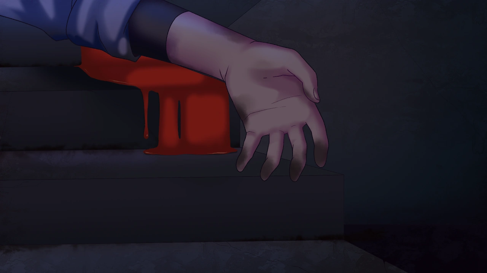
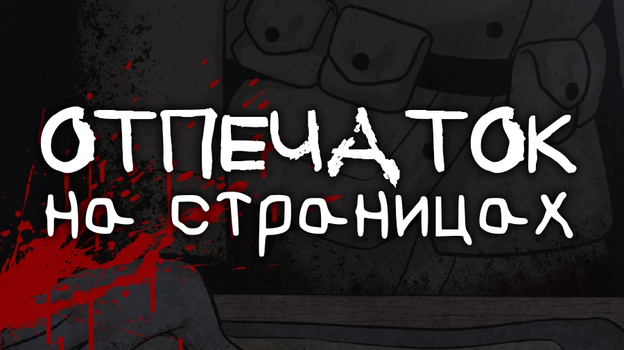

UT: Facing Demons
1–1,5 часа
В этой фан-игре сразись с Чарой Дриимурр на концовке геноцида в АУ StoryShift с авторскими изменениями от команды разработчиков.
- Полная русская озвучка
- 5 уникальных концовок
- 3 игровые фазы
- Новая игра+
- Ачивки
IGB Team / Проекты
1–1,5 часа
В этой фан-игре сразись с Чарой Дриимурр на концовке геноцида в АУ StoryShift с авторскими изменениями от команды разработчиков.

30–40 минут
Студент второго курса технического университета отдыхал на даче своего друга, где узнал о городской легенде, гласящей о таинственном призраке убитой на заброшенном заводе девушки. Когда он возвращался поздно ночью с вечеринки, его старая «девятка» заглохла на дороге посреди леса. Дожидаясь своего друга, с которым он был на вечеринке, чтобы тот подбросил его, парень вдруг замечает странный свет в глубине леса. И, будучи скептиком, он не придает этому особенного значения, поэтому решает найти источник света, надеясь найти населенный пункт.

30–40 минут
Наконец-то ваше маленькое путешествие по Сноудину подошло к концу. Но на вашем пути осталось ещё одно препятствие. Этот очаровательный пушистый монстр не причинит вам вреда, но вы должны помочь ему закончить игру. Дайте ему то, что он просит!

30–40 минут
На страницах этого помятого дневника развернулась история обычного крестьянского сына и его дорогой сестры, что прошли через ужасы войны и увидели её безобразный лик. Пусть эта история станет кому-то уроком, а кому-то — напоминанием о неизменности злобного рока. За сим начнём же с первой страницы...
Награда. 22 место в Anivisual Jam 4 (2022)

20–30 минут
Игра демонстрирует битву с Омега Флауи от лица самого Флауи. Пробуждающиеся Души падших детей вынесут свой вердикт этому заплутавшему ягненку.
Ожидается ремейк
Скачать · itch.io
30–40 минут
Поз̅̾а̒͆д̇̆и остались душные задымленные коридоры̎͒ Ф͐͜абрики. Больше не получится притворяться обы͌̌ч̘͘н̉͡ым Вегетоидом, ведь этот нервный Мигосп всё выдал Папайрусу. Теперь остался лишь од̆͐ин̓̆ ш̀͛а́̀н͗͐с͌͞ — доказать, что твоя жизнь имеет ценность ГЕНЕРАЛИССИМУСУ ПАП̈́͞А́̆Й̞̾Р͛͞УСУ, всемогущему Принцу Подземелья!
Продолжение следует
Скачать · Game Jolt
40–60 минут
Добро пожаловать на борт ███ корабля «Зримый». Ваш идентификационный номер: ███, статус подтверждён. Перед началом ознакомительной экскурсии, просьба отрегулировать ваше устройство ПРИЗМа — оно выступит вашим главным навигационным ориентиром на борту корабля. Внимание, при работе устройства ваши органолептические возможности могут быть искусственно ограничены во избежание ███, что было прописано в условиях вашего договора. Напоминаем, в случае нарушения исполнителем пунктов данного соглашения, ваш договор будет ███. Надеемся на ███ сотрудничество, старший ███ сотрудник Николаев!
Награда. 17 место в Капелла Джем 3 (2026)
Ожидается ремейк
Скачать · ВКонтакте
30–40 минут
В этой альтернативной вселенной вы играете за Мэттью — человека, попавшего в Подземелье, населённое монстрами. Вам предстоит отправиться в приключение, чтобы выбраться из этого места и вспомнить, как вы здесь оказались. Но почему вам кажется, что вы не должны быть главным героем этой истории?
Продолжение следует
Скачать · Game Jolt
Длительность пока неизвестна
Это визуальная новелла, где твой выбор зависит только от броска кубика. Ты не смог выбить любимую героиню в онлайн-игре, в гневе ты проклинаешь Бога за своё невезение. В ответ, чтобы ты усвоил урок, Бог одаривает тебя волшебным кубиком и отправляет в иной мир, который живет по строгому Сценарию. Сможешь ли ты усвоить урок Бога или навсегда сгинешь в этом жестоком мире, в котором не существует самой концепции удачи?
Дата выхода пока неизвестна